Port Emm
Zavidovo
Eine Resort-Identität, geprägt vom Leben an der Wolga. Gemeinsam mit DUGA für Samolet Select entwickelt.
Art Direction — Anna Dmitrieva / Samolet
Markenidentität — in Zusammenarbeit mit DUGA
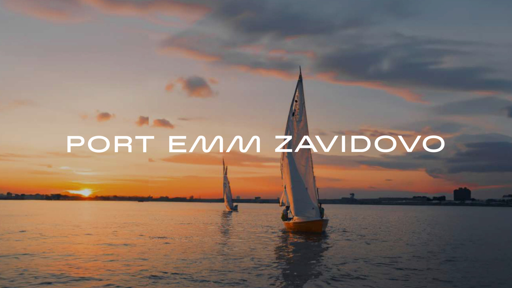
Ein eigener Charakter.
Eine gemeinsame Markensprache.
Als Art Directorin aufseiten von Samolet arbeitete ich mit DUGA an der Identität von Port Emm Zavidovo. Ziel war ein eigenständiger Charakter für das Resort innerhalb der Marke Samolet Select.
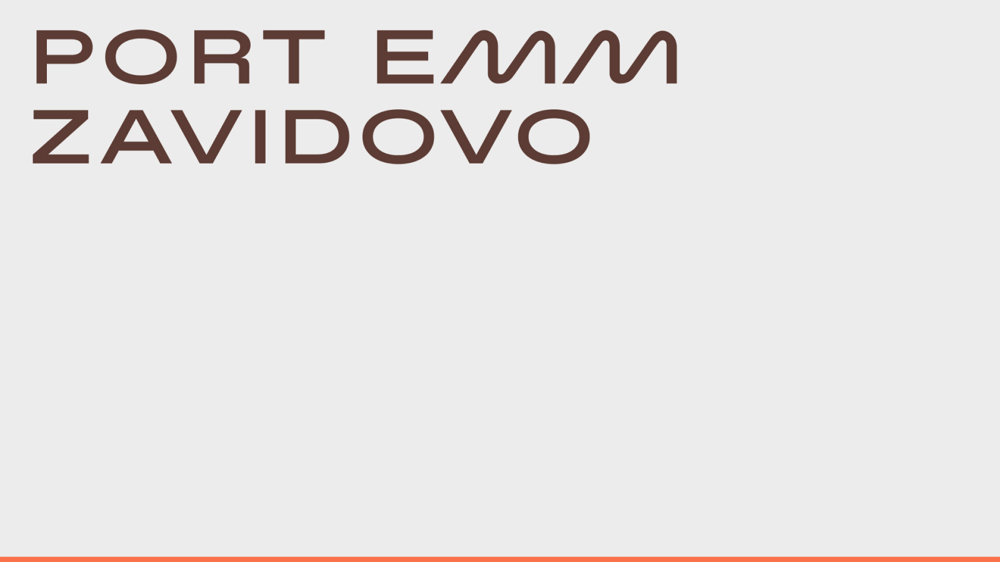
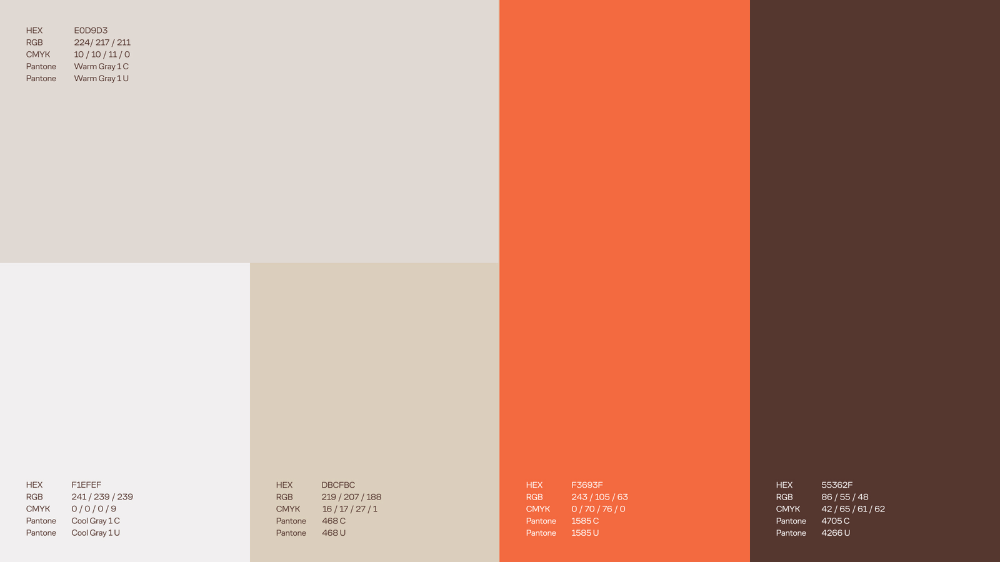
Leben am Wasser.
Luftige Typografie, natürliche Farbtöne und ein kräftiger orangefarbener Akzent vermitteln die Energie des Resortlebens. Das System verbindet Außenwerbung und digitale Kommunikation.
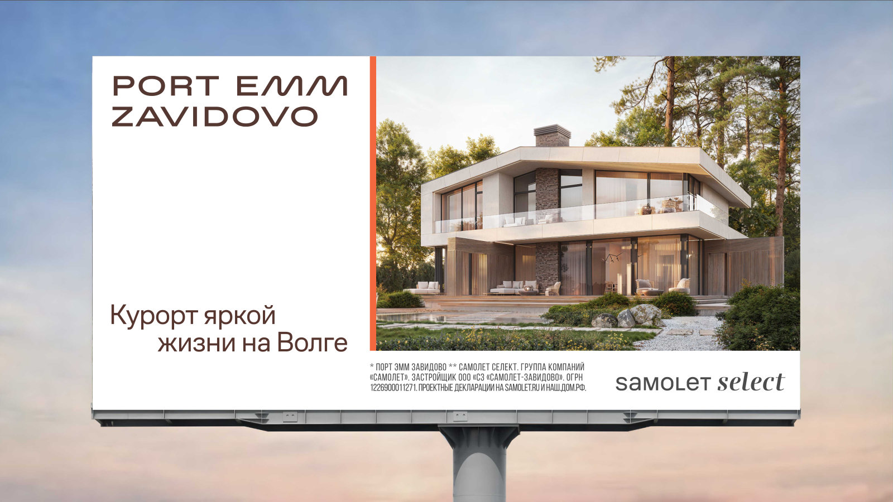
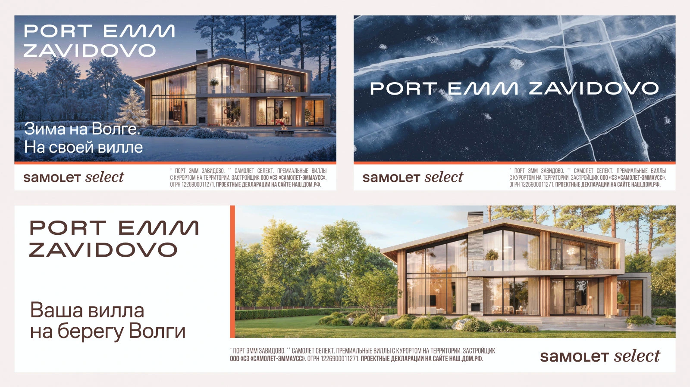
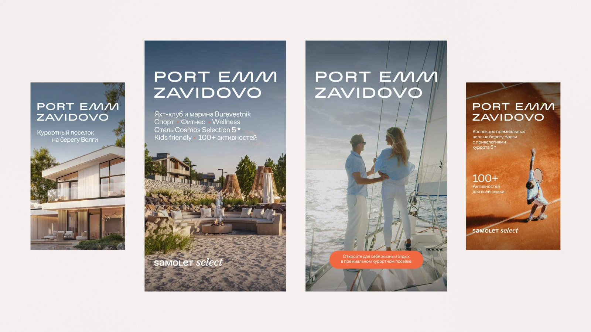
Identität zum Anfassen.
Ein ruhigerer Ausdruck desselben Systems: haptische Drucksachen, durchdachte Veredelungen und sorgfältige Details.
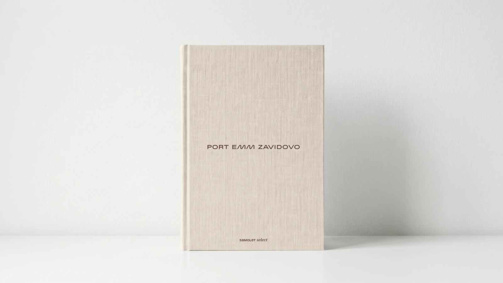
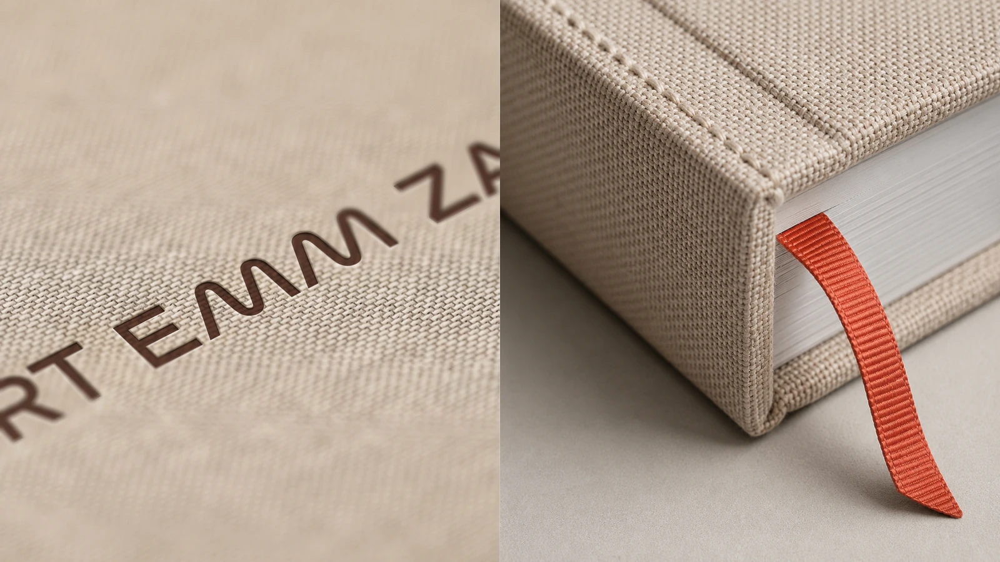
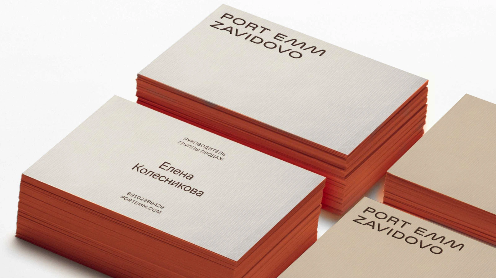
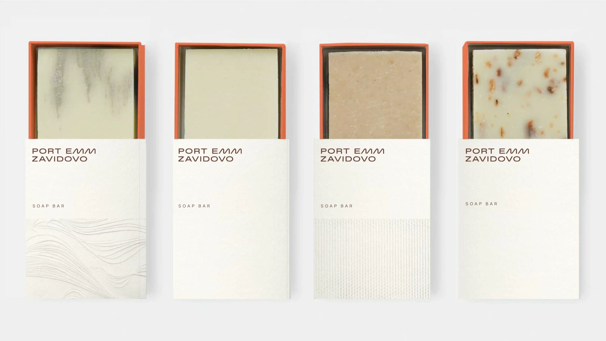
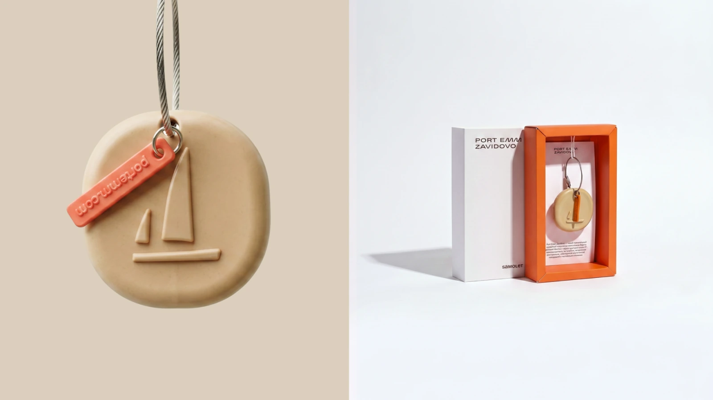
Von der Kommunikation
in die Räume des Resorts.
Leitsystem und physische Anwendungen machen die Identität in den Räumen und Erlebnissen von Port Emm erfahrbar.
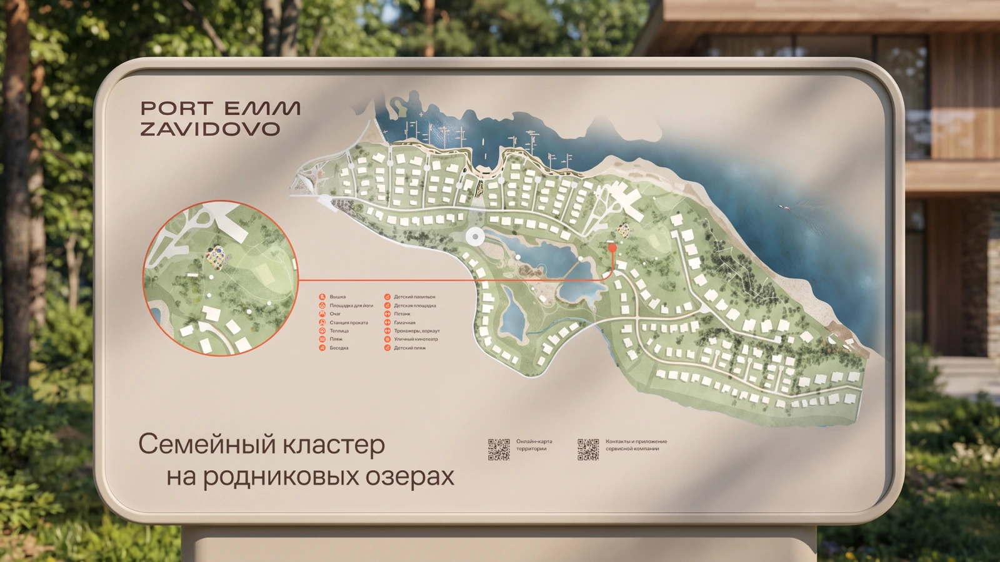
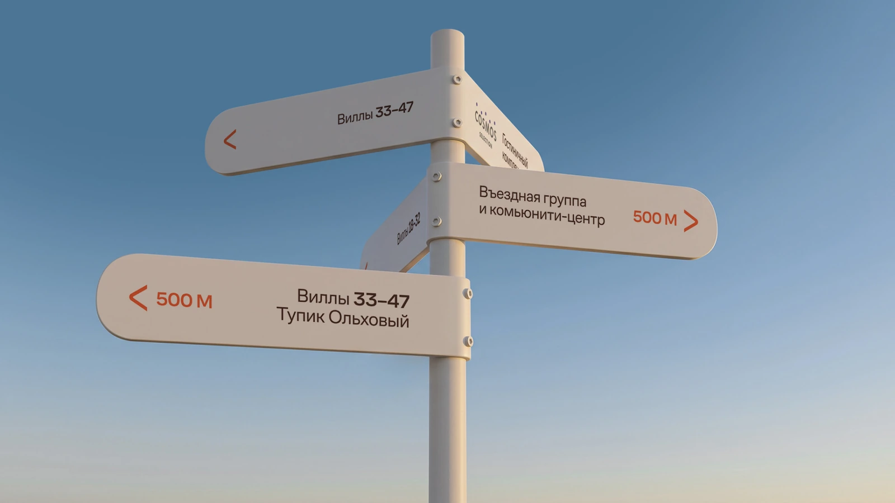
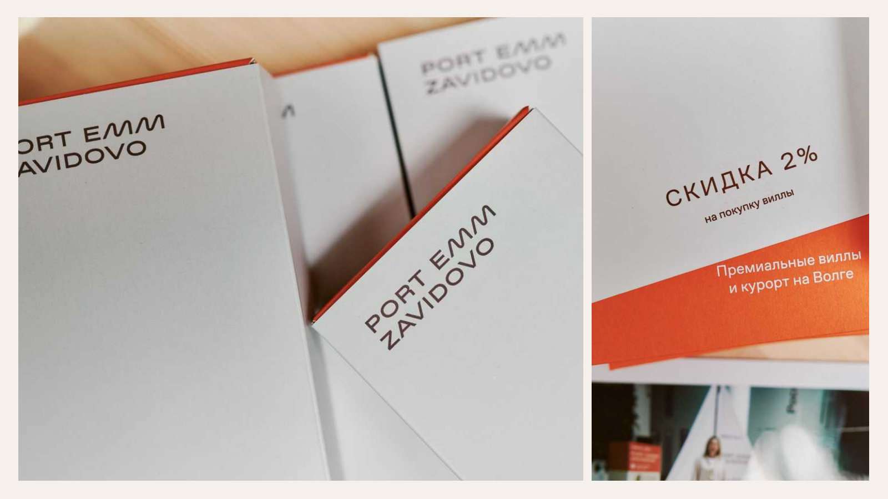
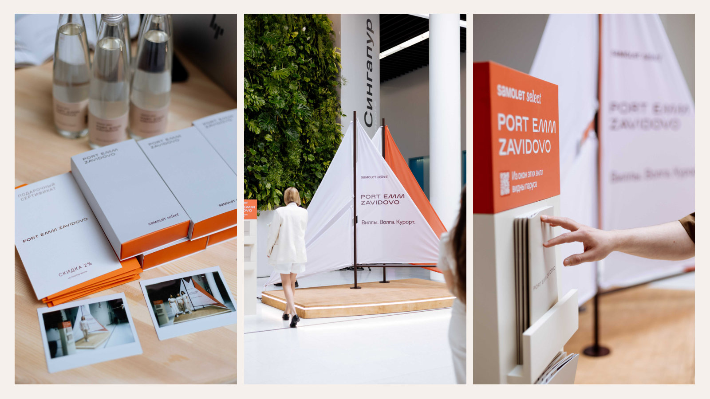
Anna Dmitrieva
Art Direction aufseiten von Samolet
Markenidentität gemeinsam mit DUGA entwickelt
Weitere Projektbilder: duga.agency